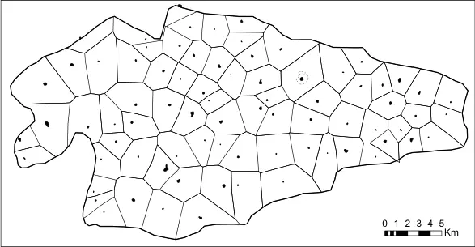
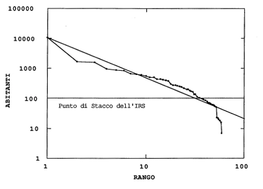

A Tale of Two Kingdoms
The impact of the Assyrian Empire on Judah and Israel
![]()
University of Turin
University of Turin
The Geography of Large-Scale State Policies on Physical and Cultural Landscapes in Western Asia
Workshop - Turin, 13 December 2024
Introduction
1 2 3 4
Talk Overview
1 2 3 4
- Introduction to Iron Age Settlements Dynamics
- The South Levant in the Iron Age
- Data and Methods
- Project Introduction
- Archaeological Data and their problems
- Results and Discussion
- Centralization vs Fragmentation
- Archaeodemographic Curves
- Spatial Distribution
- Conclusions and Future Persectives
Iron Age Settlement Dynamics
1 2 3 4
- The Great Dispersal
- Landscape Infilling
- Tells vs Flat sites
- Long-term trends
- Different dynamics to the West?
- Overall trend towards centralization
- What happens in South Levant?



South Levant in the Iron Age II
1 2 3 4
- After formative period, indipendent kingdoms of Israel, Judah, Ammon, Moab, Edom, and Aram-Damascus
- Phoenician City-states
South Levant in the Iron Age II
1 2 3 4
After formative period, indipendent kingdoms of Israel, Judah, Ammon, Moab, Edom, and Aram-Damascus
Phoenician City-states
Assyrian conquest in 720 BC
Provinces and Client States
Current interpretations of Settlement Dynamics
1 2 3 4
- Stability and prosperity for the area thanks to Assyrian presence (e.g. Fales 2008; Finkelstein and Singer-Avitz 2001; Frahm 2006; Gitin 1995; Kuhrt 1995; Stern 2001)
- Devastation and underdevelopment in assyrian provinces, prosperity in the client states (Faust 2021; e.g. Faust and Weiss 2005; Stager 1996)
- Assyrian imperial strategies were nuanced and varied from region to region, with some similarities (Düring 2018, 2020; Macginnis et al. 2016; Morandi Bonacossi 2018; Parker 2020)
Research Questions
1 2 3 4
- How is demography impacted by the Assyrian invasion and subsequent administration?
- How are settlement systems impacted by imperial practices and long-term settlement dynamics?
- Can a holistic and long-term approach provide more insight on the settlement history of the regions?
Data and Methods
1 2 3 4
The Project
1 2 3 4
- Governance policies and political strategies in the Southern Levant during the Neo-Assyrian Empire
- 2 years
- Funded by the Gerda Henkel Foundation
- Univerisity of Turin (Departments of Historical Studies)
- Collaboration with LMU Munich (Department of Ancient History)


The Project - Aims
1 2 3 4
- Analyze population and settlement patterns in South Levant to investigate Assyrian imperial strategies
- Samaria and Judah (often contrasted as examples of the Assyrian empire’s destructive role)
- Holistic approach that integrates archaeological, textual, and geographic data into a spatial framework
- Long-term analysis: Chalcolithic (4500 B.C.) - Byzantine (638 A.D.)


Archaeological Data
1 2 3 4
- Settlement location, size and periodization (Chalcolitic to Byzantine)
- Samaria Survey (Finkelstein et al. 1997)
- Massasseh Hill Survey (Bar and Zertal 2021, 2022; Zertal 2004, 2007; Zertal and Bar 2017, 2019; Zertal and Mirkam 2016)
- Archaeological Survey of Israel (e.g. Kloner 2000)
- West Bank Database (Keinan-Schoonbaert 2016, 2018)
- Refinement
- Excavation reports
- Demographic studies (e.g Broshi 1979; Broshi and Finkelstein 1992; Broshi and Gophna 1984, 1986)
Archaeological Data
1 2 3 4
- 5530 Total Sites (From Chalcolithic to Byzantine)
- 14037 Site Phases
- From
- Samaria Survey - 516
- Massasseh Hill Survey - 1368
- Archaeological Survey of Israel - 2848
- West Bank Database - 798
Archaeological Data - Pitfalls
1 2 3 4
- Chronological precision
- Subdivisions for Iron Age not always available
- Event-based dating
- Chronological mismatch between older and newer surveys
- Overlapping surveys and data and missing areas
- Size not always available either for all periods or for specific periods
- Different nature of databases
Radiocarbon Data
1 2 3 4
- 1378 Dates
- Main Dataset
- NERD Database (Palmisano et al. 2022) - 1250 Dates
- Refinement
- XRONOS Database - 178 Dates
Processing
1 2 3 4
- Geospatial database in QGIS, R scripts
- Chronological harmonization and selection of evidence of ancient occupation (settlements) only
- Long-term fluctuation of population estimates, Summed Probability Distribution of radiocarbon dates, Aoristic Approaches and Randomization for archaeological data (Palmisano et al. 2017, 2019)
- Statistically-tested Ranks-Size analysis for inferring centralization patterns (Falconer and Savage 1995; Palmisano 2017; Savage 1997; Stoddart et al. 2020)
Types of Rank-Size curves (Crema 2013)
Results
1 2 3 4
Rank-size - Samaria and Judah
1 2 3 4
Regional trends highlight differences between Samaria and Judah
Rank-size - Samaria
1 2 3 4
- No strong centralization in IA IIa (950-780 BC)
- Process towards a pronounced centralization already in IA IIb (780-680 BC)
- Birth and rise of Samaria as capital (IA IIa/b) and then provincial centre (IA IIb/c)
- Less sites in IA IIc (680-586 BC) but more primate curve
- Probably a result of Assyrian administration
- This pattern lingers until Iron Age III (539-333 BC)
Rank-size - Judah
1 2 3 4
- No strong centralization in IA IIa (950-780)
- Zipfian-like distributioun in Iron Age IIb (780-680 BC) (“formative” stages of Jerusalem)
- Centralization clearly evident in Iron Age IIc (680-586 BC)
- Less sites in general for IA subphases
Reoccupations and Settlement Continuity
1 2 3 4
- Reoccupation trends are not as informative
- The strong continuity might just be a void in the documentation for Iron Age IIc
Reoccupations - Spatial Distribution
1 2 3 4
- Spatial distribution of IA IIa-b sites
- Strong continuation of occupation in the north, new foundation in southern samaria and southern judah
NB: Only sites surely dated to each IA subperiod are shown on the map
Reoccupations - Spatial Distribution
1 2 3 4
- Spatial Distribution of “abandoned” IA IIc (680-586 BC) sites might indicate issues of sites chronological attribution
- Or, chronological period including fall of Neo-Assyrian empire
- General tendency of assigning IA II pottery to early phases
- Abandonment almost exactly correspond to specific surveys
- A different picture if we take into consideration all general IA II sites
- Issues with Judah and Iron Age IIc
NB: Only sites surely dated to each IA subperiod are shown on the map
Radiocarbon Summed Probability Distribution (SPD)
1 2 3 4
- Long term analysis of radiocarbon dates show demographic fluctuations (estimates)
- Comparison with exponential model: statistically significant increase in the transition between LB/IA I (1300-1150 BC) and IA I/IIa (1150-780 BC)
- Gradual decline but artificial drop for later periods
Radiocarbon Summed Probability Distribution (SPD)
1 2 3 4
- Permutation Plot of radiocarbon dates
- Systematic and quantitative method to compare regional divergences in demographic fluctuations (Crema et al. 2016)
- No significant differences in Iron Age
- Curves follow more or less the same pattern
- Minor differences in the LBA
Multi-proxy approaches
1 2 3 4
- Archaeodemographic Proxies highlight similar patterns regarding population
- Small differences in the timing of the pop. increase (slightly earlier and more significant in Samaria)
- Judah: gradual growth up to the IBA and minor fluctuations in MBA II-III
- Larger growth in Iron Age appears slightly later than in Samaria (3100 BP)
- Samaria: major peaks, higher growth from ca. (3200 BP)
- Larger sites in general
Multi-scalar approaches - Samaria and Jerusalem
1 2 3 4
- Smaller settlements filling up spaces between IA I medium-sized sites
- Samaria rising as the major center in the area
Multi-scalar approaches - Samaria and Jerusalem
1 2 3 4
- Modern city prevented evaluation of immediate surroundings of ancient town
- Structure of small and medium-sized settlements

Discussion - Iron Age II in context
1 2 3 4
- Samaria: Restructuring of settlement system in Samaria at the expenses of larger sites (Squitieri 2024)
- Probably, ruralization aimed in part at agricultural output to support the assyrian army (Bagg 2017; Novotny 2023; Radner 2008; Sergi 2023)
- “Islands of control” known from other provinces (e.g. Parker 2001) and nearby areas (e.g. the coast - Thareani 2016)
- Judah: settlement system extension, urbanization and centralization in a later period (Bienkowski 2022; Mashiach and Davidovich 2023)
Discussion
1 2 3 4
- Trends that appears to be confirmed by archaeo-demographic proxies
- Our results resemble previously identified supra-regional patterns (Palmisano et al. 2019, 2021)
- Very similar demographic curves and fluctuations for Samaria and Judah
- If deep settlement system difference, the two curves would have been divergent, or profoundly different
- Settlement system restructuring/ruralization (Samaria) and later centralization (Judah) evident from the rank-size curves

Archaeodemographic proxies for Southern Levant (Palmisano et al. 2021)
Discussion
1 2 3 4
- Although similar trajectories, not necessarily similar causes, as evidenced by the rank-size
- Regional dynamics must be carefully assessed (complex and nuanced phenomena)
- Ruralisation typical of the Iron Age (Squitieri 2024; Wilkinson 2003)
- But not always to the detriment of the entire pre-existing settlement system (Bienkowski 2022; Mashiach and Davidovich 2023; Porter et al. 2014; Routledge 2004)
Samaria
Judah
Conclusions
1 2 3 4
Conclusions
1 2 3 4
- Generally, an IA-like trend of settlement dispersal and centralization is visible in both regions
- However, regional differences
- Samaria seems to attain a primate curve (centralization) earlier (IA IIb) than Judah (IA IIc)
- Possibly an effect of the integration inside the assyirian provincial administration
- Demographic trends do not show significant differences between the two regions
- The concept of two separate trajectories based on destruction and flourish cannot be supported
- Chronological issues prevents (for now) a deeper evaluation of IA IIc, especially from a spatial standpoint
Future perspectives
1 2 3 4
- Systematic integration of historical sources (ARMEP - Novotny and Radner 2018)
- Publication of the dataset and analyses in the respective online repositories

Thank you for your attention!
Andrea Titolo (andrea.titolo@unito.it) - 0000-0002-7322-8634
Alessio Palmisano (alessio.palmisano@unito.it) - 0000-0003-0758-5032
Presentation online at the qrcode above or at the following link